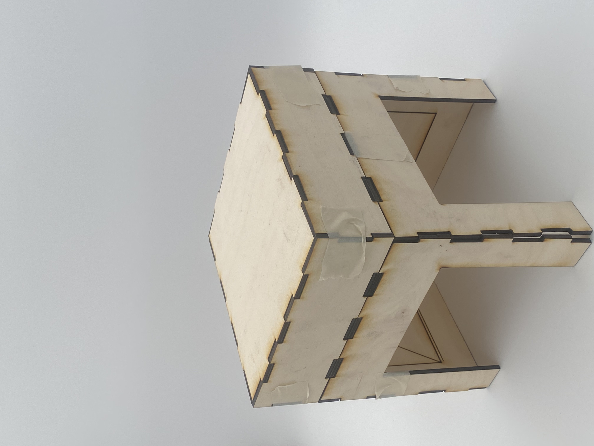
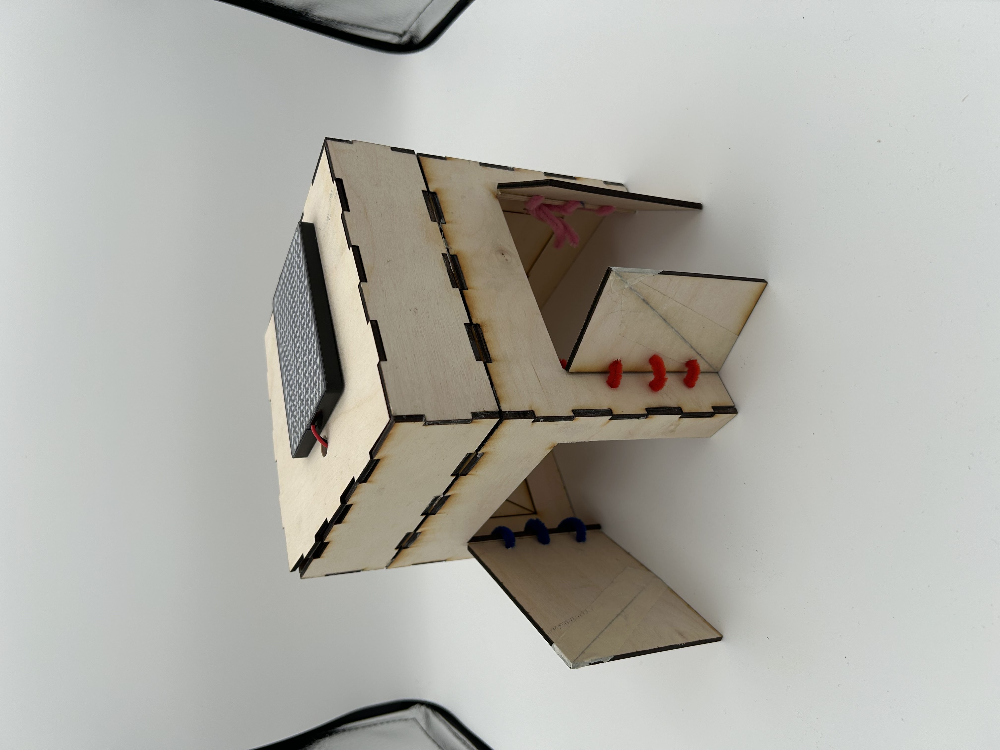
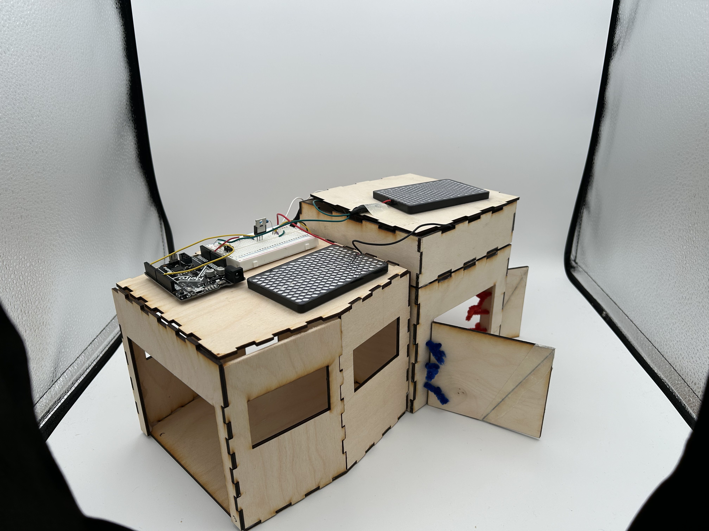

Designed and built the housing and electronics for an autonomous rover prototype — laser-cut plywood enclosure with a color-coded sensor system, LED matrix display, and Arduino-based control circuit.
[Describe the project — what the rover was supposed to do, what your team's specific responsibilities were for the housing and circuit design, and what the constraints were.]

laser-cut plywood housing — empty structure

finished housing with LED matrix and color-coded sensor doors
The enclosure was laser-cut from plywood with finger-joint construction. The design included hinged access doors on two sides, color-coded with yarn stitching (blue, pink, red) to indicate sensor orientation or team assignments.
[Describe your CAD process — what software, key design decisions, any iterations.]
An LED dot matrix mounted on top served as the output display. The two-tier structure separated the electronics compartment from the sensor housing below.
[Any other structural notes — dimensions, material thickness, assembly method.]

both units side by side — electronics visible on top
[Describe the circuit inside — microcontroller, sensors, what the LED matrix displayed, how it was powered and controlled.]
[How did the final rover perform? What worked well, what would you change?]